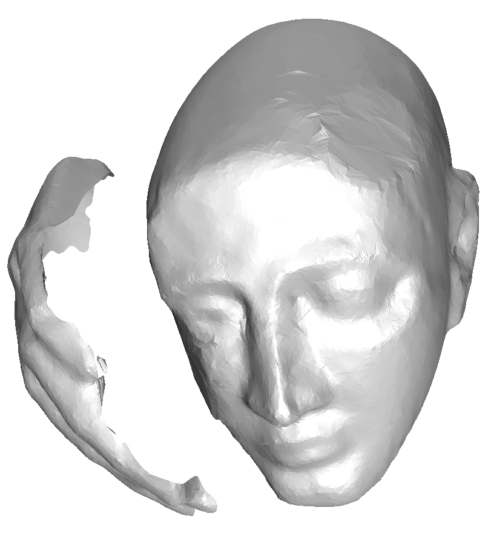

La construcción del modelo tridimensional empieza con la nube de puntos. Para lograr el modelado de un objeto complejo se requiere evaluar diferentes vistas con tal de mejorar la geometría en reconstrucción [9,20]. Los puntos obtenidos deben ser registrados en un sistema de coordenadas consistente el cual permitirá obtener mapas de profundidad robustos. Posteriormente se debe realizar la conversión de los diferentes mapas en una serie de modelos tridimensionales y finalmente fusionarse en un único modelo [9,2,7,20]. La Figura 1.7 muestra el resultado final de la reconstrucción del modelo tridimensional.
Figure 1.7:
Modelo de superficie tridimensional obtenido a partir de la nube de puntos y una serie de técnicas de la visión artificial. Imagen tomada de http://cmp.felk.cvut.cz/projects/is3d/ ©.
|
 |
Randy Saborio
2012-02-25